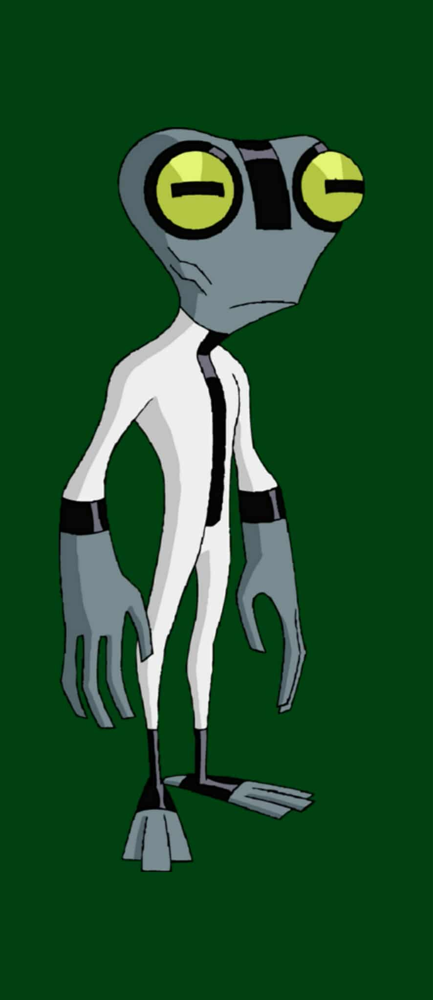

1.General Info:
Species: Galvan
Home Planet: Galvan Prime
Size: Very small (about 5-6 inches tall)
2.Appearance
1.Frog-like humanoid shape with grey skin
2.Large eyes, wide pupils
3.Wears a suit that marks him as part of the Omnitrix transformations
4.Slim, small build, able to move quickly despite size
3.Abilities & Powers
1.Extremely high intelligence: great at solving tech problems, inventing things, repairing machinery, understanding devices quickly
2.Can squeeze into very small spaces; can crawl walls using microscopic pads on skin
3.Enhanced agility, reflexes, and jumping for his size
4.Can breathe underwater (has gills)
5.Sharp teeth; long prehensile tongue useful in unusual situations
6.Linguistic intelligence: can understand or deduce unfamiliar languages & systems quickly
7.Slimy or sticky skin makes him harder to grab
4.Weaknesses
1.Physically weak — not made for heavy combat or strength fights
2.Small size means many opponents underestimate him, or animals might see him as prey or toy
3.Vulnerable to electricity
4.Because he’s small, he can be trapped or overwhelmed if adversary uses brute force or traps